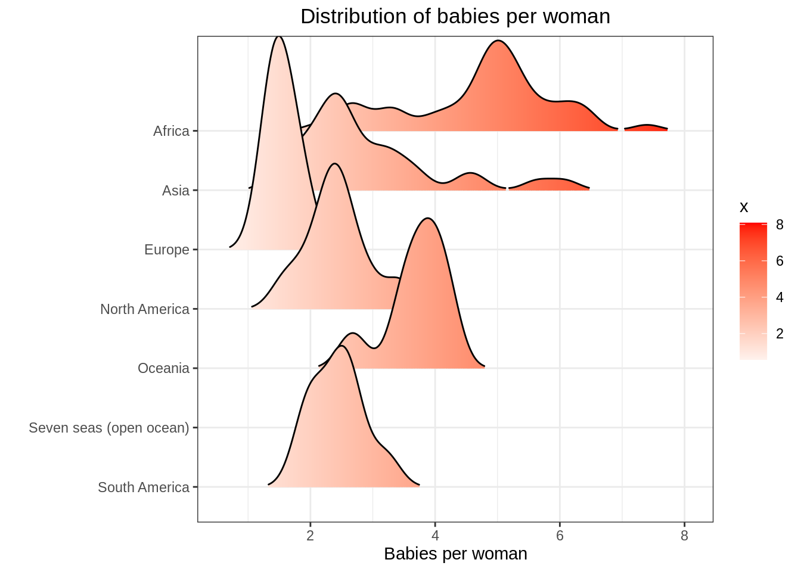

College Scorecard Report
Preface
1
Introduction
2
Income Inequality to Quality of Life
2.1
Education
3
Quality of Life Associations
4
Birth Rate
5
Quality of Life
Title Goes Here
4
Birth Rate
Distribution of birth rates by continent

Figure 4.1: Distribution of Birth Rates by Continent
Scatter plots of birth rates by country
Figure 4.2: Income Inequality to Birth Rate